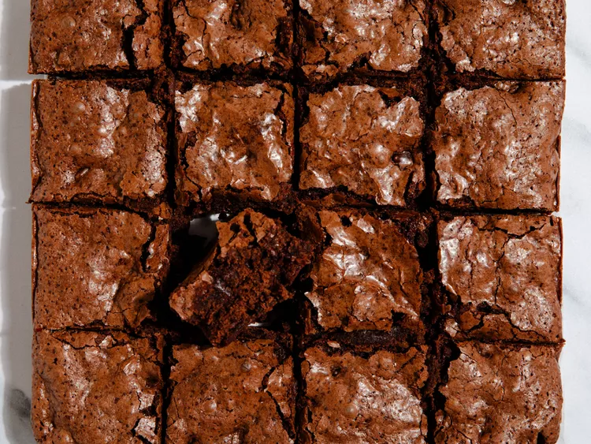

Brownie Recipe!
By Corey Williams Published on April 24, 2025

Ingredients needed
- 1 (18-ounce) box brownie mix (such as Ghirardelli)
- ¼ cup water
- ⅓ cup vegetable oil
- 1 egg
- 1-2 (7.37-ounce) Giant Symphony bars or 2-3 (4.25-ounce) XL Symphony bars, broken into squares
Instructions
- Preheat the oven to 325 degrees F and grease an 8x8-inch pan.
- Combine the mix, water, oil, and egg in a bowl and stir until fully incorporated.
- Pour half of the batter into the pan, then arrange the Symphony squares in an even layer across the batter. Pour the remaining batter into the pan.
- Bake the brownies for 40-45 minutes.